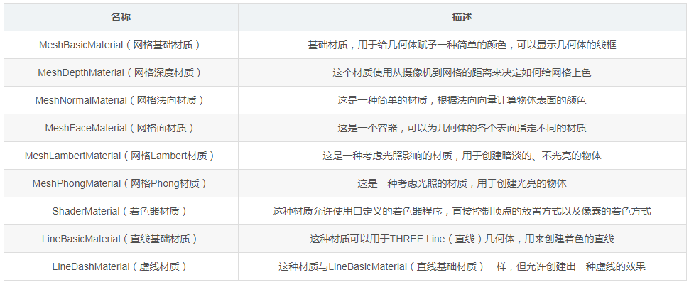
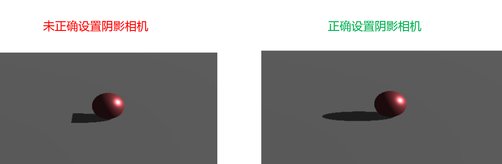
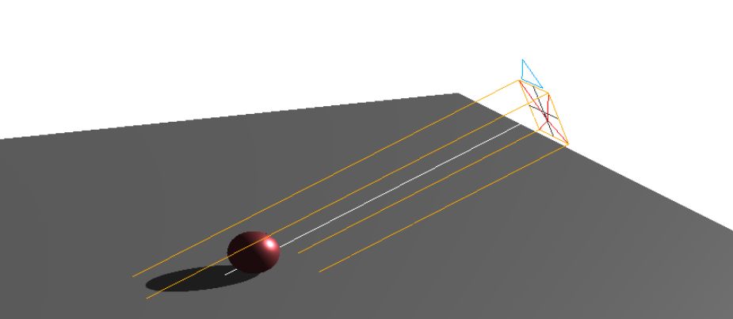
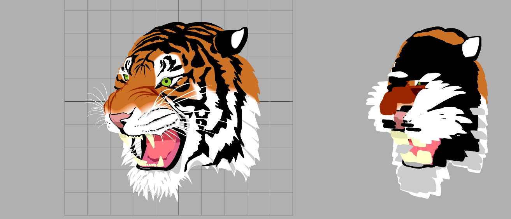
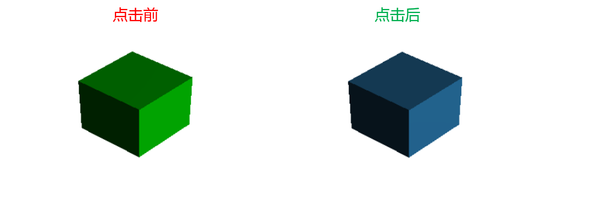

原文连接:https://www.cnblogs.com/dashnowords/p/11182474.html

示例代码托管在：http://www.github.com/dashnowords/blogs
博客园地址：《大史住在大前端》原创博文目录
华为云社区地址：【你要的前端打怪升级指南】
一. 资料推荐及建议
1.官方文档
很详细，但是API部分单独理解也很难，属于工具书。官方github仓库里提供了海量的插件和demo页面。
2.在CSDN上找到的一个【Three.js系列博文】
内容相当全，包括了three.js的基本知识，官方仓库的实例说明，插件说明等等，是笔者学习的主线。
3.上面的内容最好是做个大作业实践一下
4.想要学习底层知识的话，需要学习的资料是线性代数和WebGL编程指南。
二. Three.js中的基本概念
官方文档中的新手示例过于简单，所以本节对Three.js中的概念进行一些补充描述：
客观三要素：场景
Scene，相机Camera，渲染器Renderer具体用法可以看官方文档的【新手示例Demo】
光照
LightTHREE.js提供了点光源，射线光源，平行光，环境光的等多种光源来模拟光。几何模型
Geometry生成实体的第一步是要建立几何模型
geometry，THREE.js根据构建数据的数据类型将几何模型分为Geometry和BufferGeometry两个大类，每种内置类型都可以使用其中任何一种来实现，BufferGeometry基于定型数组运作，使用起来要求更严格也更复杂，但性能相对更好。THREE.js中内置了包含立方体，球体，多面体数十种常见的几何体，也可以将canvas绘制的平面图形拉伸成为实体。材质
Material第二步是为实体选择材质
material，材质是描述几何体表面对于光照的表现的，是像金属表面那种高光，还是像粗糙表面那样会对光进行漫反射的，几何体的不同表面也可以选择不同的材质。材质material需要和贴图texture的合理搭配才能使最终的实体效果更加逼真，比如你给一个立方体选择了镜面反射的材料，但是又贴了砖头墙面的纹理，最终效果就会很诡异。贴图纹理
Texture第三步是为实体选择贴图纹理
texture，纹理通常是通过引入图片来生成，通过贴图可以让几何体呈现为它所代表的实体模型，比如一个球体，你贴上足球的纹理，它就是足球，贴上篮球纹理，把周围环境作为贴图贴在它表面，它就是水晶球。texture通常是在material实例化时通过指定map参数来关联的。实体
Object大多数博文的示例中只使用到了
Mesh（网格实体）这一种类型的实体模型，实际上THREE.js中还提供了Points（粒子点集实体）,Line（线性实体），Skeleton（骨骼动画实体）等等多种抽象实体模型来构建模型。实体的实例化依赖于geometry几何模型实例和material材料实例，最终调用场景的add方法将实体实例添加进场景中，实体就可以被渲染器renderer渲染出来。动画的更新
动画的更新实际上和二维动画是一样的，也是通过
requestAnimationFrame和逐帧动画来实现的。
三.重点笔记
webGL中的世界坐标是以屏幕中心为原点(0,0,0)的，面对屏幕时，右为正X，上为正Y，指向屏幕外为正Z。dat.GUI是个非常棒的动态调试工具，官方仓库地址：https://github.com/dataarts/dat.guiTHREE.CameraHelper类可以生成相机视锥辅助线，非常有用。常见材质的区别如下：
MeshLambertMaterial材质适合表现漫反射表面，MeshStandardMaterial和MeshPhongMaterial适合表现镜面反射表面,MeshBasicMaterial是不响应光照的基本材质。THREE.PointLight是真正的点光源，THREE.SpotLight是射线光源flyControls控件相当于为相机实现第一人称视角，玩过CS的应该都懂。材质的基本定义：

生成网格实例时传入
wireframe:true即可以网格形式展示几何体。THREE.LatheGeometry相当于三维建模软件中的“根据样条曲线生成回转体”，构造函数的参数中没有回转轴，此处官方文档中有说明：车削是绕着Y轴来进行旋转的。THREE.shapeGeometry,THREE.ExtrudeGeometry等一类由平面生成3D实体的模型，感兴趣的可以尝试一下三维建模软件solidworks，完全是一个路数，对理解这些抽象几何实体很有帮助。三维的动画和二维动画的原理没什么区别，都是通过逐帧动画实现的。
AnimationMixer是场景中特定对象的动画播放器，场景中有多个独立动画时，可以为每一个对象使用一个AnimationMixer。变形动画的实现过程：获得
animationMixer实例,获得clip实例，获得action实例，最后调用action.setDuration().play()开启动画播放。morph和skeleton动画对比，morph文件更大加载更慢，但实际在网页上计算量更小；骨骼动画文件更小，当在网页上运行时需要进行更多计算。反光表面是通过材质实例化时修改
envMap属性实现的。舞台背景
scene.background是可以设置贴图纹理的。调整贴图的
四.补充示例
第15节-关于物体阴影
后来发现这个问题在第27节有说明。
许多demo都无法生成投影，投影不仅需要设置光线和物体的castShadow = true ,receiveShadow = true,同时需要选择能够响应光线的材质，另外，阴影需要独立的相机去拍，默认是一个正交相机，需要正确调整其参数才能够显示阴影,参数配置错误时可能会显示一半阴影或者马赛克黑区：
//初始化灯光
function initLight(color) {
//添加环境光
ambientLight = new THREE.AmbientLight(0x404040)
scene.add(ambientLight);
//添加平衡光
light = new THREE.DirectionalLight( 0xffffff );
light.castShadow = true;
light.shadow.camera.near = 0.1; // default
light.shadow.camera.far = 1000; // default
light.shadow.camera.left= -5; // default
light.shadow.camera.top= 10; // default
light.position.set(60,30,0);
scene.add(light);
}
另外，可以通过开启相机辅助功能查看阴影相机的视锥，并配合dat.GUI等其他工具进行调节：
shadowCameraHelper = new THREE.CameraHelper( light.shadow.camera );
scene.add(shadowCameraHelper);
第46节-关于将svg拉伸为实体
原文中提到的transformSVGPathExposed函数和官方代码仓lib里的脚本已经找不到了，新版的官方文档中已经听过了SVGLoader来完成svg到shape的转换，具体用法可参考SVGLoader文档 ，官方仓库的example中提供了webgl_loader_svg.html示例文件，我们在其中稍作改动，将转换后的shape作为参数来得到拉伸体实例THREE.ExtrudeGeometry，就可以看到读入的svg被拉伸了：

第58节-重点：用THREE.Raycaster实现交互
这里很重要，是3D模型能响应用户交互行为的关键。后文的第101节也有这部分知识的说明
官方文档中已经提供了示例代码，平面坐标到3D坐标转换的部分如果不明白，可以看这篇博文ThreeJS中的点击与交互——Raycaster的用法,笔者也提供了示例demo供参考。

第85节：用morphTargetInfluences实现动画（简称Morph动画）
关于Morph动画的基本原理摘抄如下(原文链接)：
The value is a scalar that determines the effect of a morph target. A morph target is another list of verticies (same length) that go along side the original list of verticies. Say we have a list of size 2 (a line),
var list1 = [0.1, -0.2]
and a morph target:
var list2 = [0.2, -0.3]
the scalar value is used like so:
finalVertexPosition = list1[0] + (list2[0] * scalar);
使用时需要在Geometry实例构造函数的配置项中开启morphTargets: true,目标几何体的点集vertices相当于上面的list1,存放在目标集合体geometry实例morphTargets数组中的向量相当于上面的list2（它可以存放多个），而每一个morphTargets中的变形向量对原物体的影响系数存放在morphTargetInfluences数组中，取值为-1~1,相当于上面的scalar，通过连续改变morphTargetInfluences的值就可以实现变形动画，morphTargetInfluences是mesh实例的属性而不是 geometry的属性。
第101节：3D世界坐标求平面坐标
文中提及的localToWorld方法实际上继承自Object3D这个父类，当前版本的方法签名是：
Object3D.localToWorld(target:THREE.Vector3):target也就是说调用的时候需要传一个空的Vector3实例，然后结果会被填充在里面，文中那种无参调用的模式会报错。其他的按照原文的方法就可以反求二维空间的坐标了。